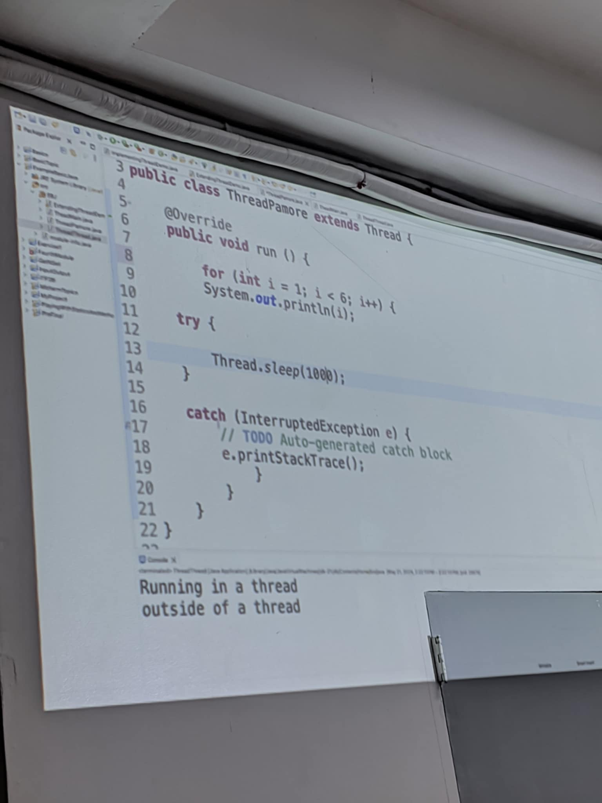
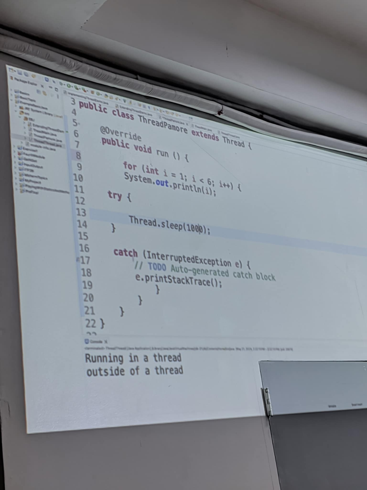

HI! You Are Welcome
Here, I share my thoughts, experiences, and projects. Stay tuned for updates!

My First Journey
My first journey as an Information Technology student at STI College Alaminos City was a transformative and enriching experience. From the excitement of the first day to the challenges of programming and database management, I developed both technical skills and personal growth. Group projects, especially building an inventory system and a task management app, taught me teamwork, problem-solving, and perseverance. The unwavering support of my instructors and the strong bond with my classmates created a collaborative and motivating environment. Through every challenge and success, I gained confidence, built meaningful friendships, and discovered a passion for technology that fuels my eagerness to continue learning and growing in the field.

On the Job Trainning
My On-the-Job Training at the Bureau of Fire Protection (BFP) in Alaminos City, Pangasinan was a transformative experience that deepened my understanding of fire safety, emergency response, and public service. Over 320 hours, I engaged in drills, community outreach, equipment handling, and administrative tasks, all of which taught me valuable technical and life skills. I faced physical and emotional challenges that pushed me out of my comfort zone, but they led to personal growth, resilience, and a stronger work ethic. The experience fostered a deep respect for the firefighting profession, teamwork, and the importance of service. Earning my Certificate of Completion on May 14, 2025, marked a proud milestone. I now carry forward not only practical knowledge but also a renewed sense of purpose, ready to contribute meaningfully to the safety and wellbeing of others.
 
